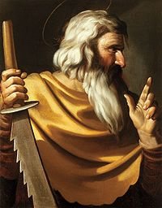

| Симон Кананит Материал из Википедии — свободной энциклопедии |
|  Апостол Симон Кананит с орудием своего мученичества (Караваджо, 1600-е годы) |
Симон Кананит (Зилот) (греч. Σίμων ο Κανανίτης) — один из апостолов (учеников) Иисуса
Христа. Память апостола Симона совершается в Православной церкви (по юлианскому календарю) 10
мая и 30 июня (Собор двенадцати апостолов), в Католической церкви 28 октября.
В ЕвангелияхСведения в Евангелиях о Симоне Кананите крайне скудны. Он упомянут в списках апостолов в Евангелии от Матфея (10,4), от Марка (3,18), от Луки (Лк 6,15), а также в Деяниях Апостолов (1,13). Он называется Симоном Зилотом или Симоном Кананитом, чтобы отличить его от Симона Петра. Никаких других сведений об апостоле Новый Завет не приводит. Прозвище Зилот иногда истолковывается как приверженность иудейскому национализму (зелотам)[1]Симон Кананит отождествляется со сводным братом (от Иосифа и Саломии) Иисуса Христа, который справлял свадьбу в Кане Галилейской, где Иисус превратил воду в вино[2]. Его отождествляют с Симеоном, апостолом из числа 70, который стал вторым епископом Иерусалима после казни Иакова Праведного. |
ПреданиеСогласно преданию святой апостол Симон проповедовал учение Христово в Иудее, Египте и Ливии. Возможно, проповедовал вместе с апостолом Иудой Фаддеем в Персии.Есть сведения (скорее всего, легендарные) о посещении апостолом Симоном Британии. По преданию апостол принял мученическую кончину на Черноморском побережье Кавказа, был заживо распилен пилой. Погребён в городе Никопсии, местоположение которого вызывает споры. Согласно наиболее распространённой теории, этот город — нынешний Новый Афон в Абхазии[3]; по другой — он находился на месте нынешнего посёлка Новомихайловского в Краснодарском крае. Впоследствии (в XIX веке) на предполагаемом месте подвигов апостола, близ Апсарской горы, был сооружён Новоафонский монастырь Симона Кананита. Там и сегодня показывают пещеру, в которой подвизался апостол. |
Святой Апостол Симон Кананит или ЗилотСвятой Апостол Симон (с евр. Услышание) Кананит, память которого празднуется Православной Церковью дважды в году: 10 мая и 30 июня, был сродником и учеником Христовым из числа 12-ти Апостолов. Происходит он из Каны Галилейской отчего и называется в истории Кананитом или Зилотом (с греческого ревнитель закона) ибо отличался особой ревностью к закону (Деяния 1-13).Чтение первого Святого Евангелия от Матфея на литургии в день памяти этого Святого Апостола благовествует нам о братьях Господа по плоти. Среди них назван в Святом Евангелии и Симон (Мф. 13, 54-58). Вот что благовествует нам Святое Евангелие: "И пришед (Иисус) во отечество Свое (Назарет), учаше их (жителей назаретских) на сонмищи их, яко дивитися им и глаголати: откуду Сему премудрость сия и силы? Не Сей ли есть тектонов сын, не Мати ли Его нарицается Мариам; и братия Его Иаков, и Иосий, и Симон, и Иуда? И сестры Его не вся ли в нас суть; откуду убо Сему сия вся (Мф. 13, 54-56). Родитель Святого Апостола Симона и иных братий и сестер Христовых по плоти праведный Иосиф (память 26 декабря), обручник Пресвятой Девы Марии, происходил из Царского рода Давидова, был потомком Святого Царя псалмопевца (память 26 декабря) и сына его Святого Царя и пророка Соломона. По занятиям своим отец Симона Иосиф принадлежал к простым ремесленникам, был древоделом т. е. плотником и снискивал ежедневно пропитание трудами рук своих. До 80-летнего возраста он жил в чистоте и святости как простой, но честный и добродетельный труженик и имел в супружестве Саломию. Четыре сына и две дочери произошли у этой благословенной четы. По кончине супруги своей Саломии Иосиф, отец Симона жил много лет вдовцом, и в этом смиренном положении застало его избрание Промысла Божия. Он удостоился великой чести быть обрученным с Чистейшей Девой и быть служителем великой тайны, сокрытой от вечности. Святой Епифаний Епископ Кипрский (403 г.), память которого 12 мая и 7 ноября, говорит, что Иосиф при обучении с Пресвятой Девой был вдов и имел 80 и даже более лет: "Умерла жена его; после многих лет, будучи вдовым, он принимает Марию, имея от роду 80 или более лет". Затем тот же Святой Епифаний так называет детей Иосифа и Саломии: "Иаков, Иосия, Симон, Иуда - сыновья; Мария и Саломия - дочери" - и замечает, что о них упоминается в Святом Евангелии под именем братьев и сестер Господа. Так, по указанию Святого Апостола и Евангелиста Матфия и других учителей Церкви, Святой Апостол Симон Кананит есть третий мнимый брат Господа по плоти, или лучше сказать по родству. Поначалу Симон, как и два других брата его Иосия (Варсава) (память 4 января) и Иуда (Леввей, Фаддей и Варсава) (память 19 июня) оказали Господу и брату своему небратолюбие. Когда Иосиф стал делить свою землю между детьми, рожденными от умершей жены, то пожелал дать часть и Господу Иисусу, рожденному преестественно Святою Девою Мариею. Но три сына, в том числе и Симон не хотели этого и только четвертый сын Иаков (память 23 октября) принял Господа в часть свою. Есть предание, что на браке у Апостола Симона Кананита в Кане Галилейской Господь наш Иисус Христос сотворил первое Свое чудо, претворив воду в вино о чем и сказано в Евангелие от Иоанна Богослова (Ин. 2, 1-9). Узрев чудо, совершенное Господом на свадьбе в Кане, Симон воспламенился ревностью ко Господу и так уверовал во Христа, что последовал за Спасителем, не смотря на то, что только что вступил в брак. Так, презрев все мирское, Симон пошел за Христом, как сказано, "уневестив душу свою Жениху безсмертному". Позднее в Кане, где свершилось первое чудо Божие, Святой равноапостольной Царицей Еленой (память 21 мая) была построена церковь. Приняв по Вознесении Христовом Святаго Духа, сошедшего в огненных языцех, ревнитель закона Христова Апостол Симон проповедовал веру в Иудее, а так же в Эдессе, и Сванетии, в пределах осетин и в Абхазии - в городе Севасте, нынешнем Сухуми. В местах Иверийской земли Апостол Симон был вместе со Святым Андреем Первозванным, память коего 30 ноября и 30 июня. Кроме того, Апостол Симон Кананит странствовал со словом спасения в Египет, Киринею, Мавританию, Ливию и Британию. Из жития Святого Апостола Андрея Первозванного, между прочим, видно, что он, отправившись из Иерусалима в третий раз на проповедь Евангельскую с некоторыми спутниками, направился в Эдесс; там у князя страны той по имени Авгарь остался Святой Апостол Фаддей из числа 70-ти (память 4 января, 21 августа). Князю Авгарю вернул он возложением рук здравие душевное и телесное. С остальными же спутниками Святой блаженный Апостол Андрей отправился в города и села, и везде он и Апостол Симон поучали народ и творили чудеса именем Христа. Наконец, они, пройдя через Каппадокию и приморский город Трапезунд, достигли земли Иверской и прошли часть области Триалетской, до реки, называемой Чорохи, беспрепятственно проповедуя Христа Спасителя. Апостолы, в числе которых был и Симон Кананит, посетили здесь гористую Сванетию в княжение некой жены, которая приняла их проповедь и крестилась. Здесь остался Святой Матфий (память 30 июня и 9 августа), а Апостолы Андрей и Симон Кананит проникли глубже в горы, в пределы осетин, и достигли города, называемого Фостофор, где знамениями их многие из язычников обратились ко Христу. Из Осетии Апостолы спустились в Абхазию и остановились в городе Севасте, ныне Сухум, жители которого с радостью приняли слово Божие. Блаженный Андрей оставил в этом городе Апостола Симона Кананита, а сам отправился вдоль поморья в землю джигетов, родственных абхазцам горцев (к нынешнему Новороссийску). Так первыми просветителями в вере Христовой страны Иверской избраны Богом Святые Апостолы Андрей Первозванный и брат Господень по плоти Симон Кананит. Он то и остался в абхазской местности, в городе Сухуме, для утверждения Евангельской проповеди в столь дикой и неведомой ему стране как агнец Божий посреди волков. Проповедь Апостола Симона была в 55 году по Рождестве Христовом, т. е. через 20 с небольшим лет после Вознесение Христова. Известно, что Святой Апостол Симон подвизался в пещере в ущелье реки Псыртсхи, близ Никопсии, в окрестностях современного города Новый Афон. Как именно и долго ли проповедовал Святое Евангелие в Абхазии Апостол Симон Кананит летописи не объясняют, но известно, что Святой Апостол Симон прославлял Христа Спасителя многими чудесными знамениями и Божественное учение, проповеданное им, начало приносить обильный плод веры в народе. За то ополчился на него враг рода человеческого и Апостол Симон подвергался безчисленным огорчениям и гонениям. А во время жестокого преследования христиан, воздвигнутого во времена Грузинского царя-язычника Адеркия (Аркадия), увенчан был Апостол Симон Зилот мученическим венцом и погребен неподалеку от своей пещеры, на берегу реки Псыртсхи, что в 20 верстах от Сухума. В некоторых изданиях ("Жития всех Святых", Иоанн Бухарев, Москва, 1900 г.) сказано, что Апостол был распят на кресте в Британии, где как будто бы и был погребен, но это ложное мнение. Мощи Святого Апостола Симона Кананита и теперь сокрыты в Абхазии под спудом в храме его имени. Оставшиеся после жестоких гонений христиане, скрывались в горах, лесах, где собирались вместе на молитвы и поминали всех умученных язычниками и иудеями христиан как первомучеников. Вскоре и могила Святого Апостола Симона сделалась предметом их глубокого поклонения и почитания. Затем летописи говорят, что в IV веке по Рождестве Христовом на месте погребения Апостола Симона была построена во имя его церковь, а в VI веке свет Христова учения начал здесь водворяться прочнее, со всею силою веры, которую последующие поколения христиан перенимали и распространяли далее. Брошенное Святыми Апостолами семя слова Божия начало успешно прирастать и благотворно распространяться, так что и Антиохийские и Константинопольские Патриархи, в силу укрепления и расширения христианства в Абхазии, удовлетворяя просьбы и духовные потребности новопосвященных жителей сей земли, стали назначать сюда самостоятельных Епископов. Из известных в то время епископов и пресвитеров история Христианской Церкви указывает Евстафия - епископа Севастийского (память 29 марта), т.е. Сухумского, известного аскета и подвижника, и пресвитера Аэрия того же города. Так, даже на Первом Вселенском Соборе, в 325 году, присутствовал епископ Пицундский, Стратофил и Домнос, епископ Трапезундский. Главным же городом пребывания вновь утвержденной церковной иерархии в Абхазии стал город Пицунда, близ того же города Сухума. С половины VI века Абхазская Церковь уже имела автокефальное управление. Известно, что Абхазская Церковь, как Автокефальная была представлена на Никейском Вселенском Соборе в VIII веке, в 787 году, в лице Пицундского епископа, католикоса Абхазского. В XI веке, в царствование Святого Абхазо-Имеретинского Царя Давида Возобновителя (1098- 1130), память которого 27 января, весь абхазский берег был покрыт цветущими городами и монастырями, а прилежащие горы укреплены замками и церквами. Так, вера Христианская сделалась господствующей на этой благословенной земле и Святая Церковь прославляет Апостола Симона Кананита как учителя, положившего в душах правоверующих христиан учение премудрости Божией. Из сказанного видно, что проповедь Святого Апостола Симона Кананита принесла для Абхазии, Осетии и всей Иверии самые благотворные плоды. Но, позднее, по грехам людей или же по неисповедимым судьбам Божиим, все это величие и благолепие по времени изменилось. По завоевании турками абхазцы изменили христианству, прииняли ислам и многие христианские храмы, в том числе и храм Святого Апостола Симона Кананита разрушили. Доказательством светлого прошлого осталось лишь то, что в самых глубоких ущельях Кавказа, Абхазии, Осетии и всей земли Иверской сохранилось множество развалин монастырей, храмов без куполов и других живых свидетельств древлехристианского благочестия, к которым горцы до сих пор относятся с благоговейным почтением, необъяснимым для них самих. Место погребения Святого Апостола Симона Кананита всегда было у местных обитателей в особенном почитании. Его могила и разрушенный Симоно-Кананитский храм, под спудом которого пребывает и теперь нетленное тело Святого Апостола Симона, оставалось для всей Грузии и Абхазии главным и указующим маяком Христовой веры и просвещения. Господу и Пречистой Матери Его не угодно было чтобы столь Святое место пребывало и далее в вечном запустении. По воле Всеблагого Бога, хотящего всем спастись и трудами Царствующего Дома Романовых в 20-й год благополучного Царствования Государя Императора Александра II Освободителя (1855-1881 гг.) в 1875 году древний храм во имя Святого Апостола Симона был не только возобновлен, но и при нем основали Ново-Афонский Симоно-Кананитский монастырь, ставший центром православного просвещения Кавказа и всего юга России. http://georgia.orthodoxy.ru/saints_lives_skananit.htm |